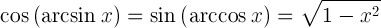

Arccos(x), cos-1(x), inverse cosine function.
The arccosine of x is defined as the inverse cosine function of x when -1≤x≤1.
When the cosine of y is equal to x:
cos y = x
Then the arccosine of x is equal to the inverse cosine function of x, which is equal to y:
arccos x = cos-1 x = y
(Here cos-1 x means the inverse cosine and does not mean cosine to the power of -1).
arccos 1 = cos-1 1 = 0 rad = 0°
| Rule name | Rule |
|---|---|
| Cosine of arccosine | cos( arccos x ) = x |
| Arccosine of cosine | arccos( cos x ) = x + 2kπ, when k∈ℤ (k is integer) |
| Arccos of negative argument | arccos(-x) = π - arccos x = 180° - arccos x |
| Complementary angles | arccos x = π/2 - arcsin x = 90° - arcsin x |
| Arccos sum | arccos(α) + arccos(β) = arccos( αβ - √(1-α2)(1-β2) ) |
| Arccos difference | arccos(α) - arccos(β) = arccos( αβ + √(1-α2)(1-β2) ) |
| Arccos of sin of x | arccos( sin x ) = -x - (2k+0.5)π |
| Sine of arccosine |  |
| Tangent of arccosine | |
| Derivative of arccosine | |
| Indefinite integral of arccosine |
| x | arccos(x) (rad) |
arccos(x) (°) |
|---|---|---|
| -1 | π | 180° |
| -√3/2 | 5π/6 | 150° |
| -√2/2 | 3π/4 | 135° |
| -1/2 | 2π/3 | 120° |
| 0 | π/2 | 90° |
| 1/2 | π/3 | 60° |
| √2/2 | π/4 | 45° |
| √3/2 | π/6 | 30° |
| 1 | 0 | 0° |